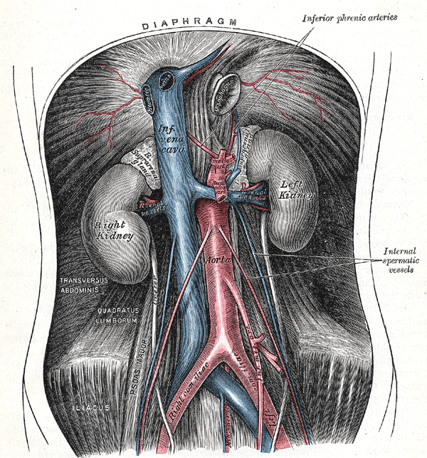

Página 5 · Parte B · Vasos
A artéria do ovário e a do útero nascem do mesmo tronco? Não. A pergunta que separa quem decorou de quem entendeu: a ovárica é ramo direto da aorta antes da bifurcação; a uterina nasce da ilíaca interna.
O núcleo de prova desta parte: vascularização
A vascularização pélvica é o núcleo que “gosta de cair”. A aorta é a estrutura-mãe da árvore em discussão.
Aorta → ovárica antes da bifurcação
Há bifurcação da aorta em ilíaca comum direita e esquerda. Antes dessa bifurcação, a aorta emite um ramo crítico para o GAO: a artéria ovárica — ramo direto da aorta abdominal. Ela sai da aorta e desce até o ovário / região pélvica.
Ilíaca interna e a uterina
Cada ilíaca comum se divide em ilíaca interna e ilíaca externa. No mundo do GAO, a ilíaca interna tem peso especial. Uma das abordagens de hemorragia pós-parto é a ligadura vascular; a ligadura da artéria hipogástrica referida na prática é a ligadura da artéria ilíaca interna (hipogástrica = sinônimo clássico). A escada completa da HPP não se reabre aqui — o endereço vascular é o que importa (↗A5).
A artéria uterina é oriunda da artéria ilíaca interna (um de seus ramos).
Par de nascimento a decorar
Guardar o par porque a banca gosta de cobrar origem de ramos. Isso paga a promessa de “onde está a artéria uterina” no eixo de origem; o cruzamento com o ureter completa na página seguinte.
| Artéria | Origem |
|---|---|
| Ovárica | aorta abdominal (antes da bifurcação) |
| Uterina | ilíaca interna (hipogástrica) |

Atlas clássico: aorta, bifurcação, ilíacas e ramos gonadais legíveis.
Plate 531 from Gray's Anatomy (20th ed., 1918), by Henry Vandyke Carter. Public domain. Source: https://commons.wikimedia.org/wiki/File:Gray531.png
Quiz — fixação
A artéria ovárica é ramo direto de:
- Gabarito C. A ovárica é ramo direto da aorta abdominal, saindo antes da bifurcação.
- (A) a ilíaca interna é origem da uterina, não da ovárica.
- (B) a ilíaca externa não é tronco de origem do GAO ovariano.
- (D) a uterina é ramo da ilíaca interna; não “mãe” da ovárica.
- Por que cair em A: “ovário e útero são pareados” — o cérebro inventa tronco comum para as duas artérias.
A artéria uterina origina-se da:
- Gabarito B. A uterina é ramo da ilíaca interna (hipogástrica) — não simetrizar com a ovárica.
- (A) a ovárica é que é ramo da aorta; a uterina vem da ilíaca interna.
- (C) veia cava é drenagem venosa, não origem arterial.
- (D) epigástrica inferior é ramo da ilíaca externa, território da parede abdominal.
- Por que cair em A: o cérebro “pareia” ovário-útero e inventa tronco comum.